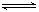
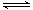
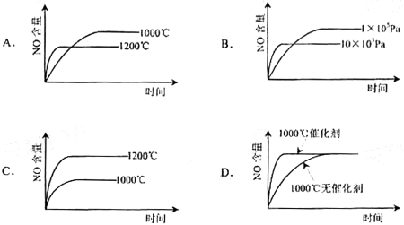
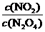
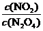
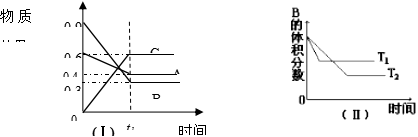
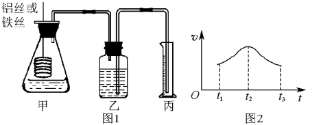
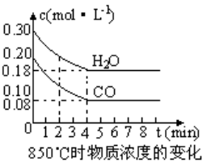

太原五中2013-2014年学年度第一学期月考（10月）
高二化学（理）
测试时间：90分钟 满分：100分
可能用到的相对原子质量 H 1 C 12 N 14 O 16
一、选择题（每小题只有一个正确选项 1～10小题每题2分，11～20小题每题3分，共50分）
1～10小题每题2分，11～20小题每题3分，共50分）
1．对某一可逆反应来说，使用催化剂的作用是（ ）
A．提高反应物的平衡转化率 B．以同样程度改变正逆反应的速率
C．增大正反应速率，减小逆反应速率 D．改变平衡混合物的组成
2．下列是4位同学在学习“化学反应速率和化学平衡”一章后，联系工业生产实际所发表的观点，你认为不正确的是（ ）
A．化学反应速率理论是研究怎样在一定时间内快出产品
B．化学平衡理论是研究怎样使用有限原料多出产品
C．化学反应速率理论是研究怎样提高原料转化率
D．化学平衡理论是研究怎样使原料尽可能多地转化为产品
3．反应A（g）＋3B（g）2C（g）＋2D（g），在不同情况下测得反应速率，其中反应速率最快的是（ ）
A．v（D）＝0.4 mol/（L·s） B．v（C）＝0.5 mol/（L·s）
C．v（B）＝0.6 mol/（L·s） D．v（A）＝0.15 mol/（L·s）
4．在2 L密闭容器中加入4 mol A和6 mol B，发生以下反应：4A（g）＋6B（g）4C（g）＋5D（g） 若经5 s后，剩下的A是2.5 mol，则B的反应速率是（ ）
若经5 s后，剩下的A是2.5 mol，则B的反应速率是（ ）
A．0.45 mol/（L·s） B．0.15 mol/（L·s）
C．0.225 mol/（L·s） D．0.9 mol/（L·s）
5．在0.1 mol/L的醋酸溶液中存在下列平衡：CH3COOH H＋＋CH3COO－，要使电离平衡右移且氢离子浓度增大，应采取的措施是（ ）
A．加入NaOH B．加入盐酸 C．加水 D．升高温度
6．甲酸的下列性质中，可以证明它是弱电解质的是（ ）
A．1 mol/L甲酸溶液的pH约为2
B．甲酸能与水以任何比例互溶
C．10 mL 1 mol/L甲酸恰好与10 mL 1mol/L NaOH溶液完全反应
D．甲酸溶液的导电性比强酸溶液的弱
7．对室温下pH相同、体积相同的醋酸和盐酸两种溶液分别采取下列措施，有关叙述正确的是（ ）
A．加适量的醋酸钠晶体后，两溶液的pH均增大
B．使温度都升高20℃后，两溶液的pH均不变
C．加水稀释2倍后，两溶液的pH均减小
D．加足量的锌充分反应后，两溶液中产生的氢气一样多
8．在气体反应中，能使反应物中活化分子数和活化分子百分数同时增大的方法是（ ）
①增大反应物的浓度 ②升高温度 ③增大压强 ④移去生成物 ⑤加入催化剂
A．①③⑤ B．②③⑤ C．②⑤ D．①③④
9．下列事实不能用勒夏特列原理解释的是（ ）
A．溴水中有下列平衡Br2＋H2O  HBr＋HBrO，当加入硝酸银溶液后，溶液颜色变浅
HBr＋HBrO，当加入硝酸银溶液后，溶液颜色变浅
B．合成氨反应，为提高氨的产率，理论上应采取降低温度的措施
C．反应CO（g）＋NO2（g）CO2（g）＋NO（g）（正反应为放热反应），达平衡后，升高温度体系颜色变深
D．对于2HI（g）H2（g）＋I2（g），达平衡后，缩小容器体积可使体系颜色变深
10．对可逆反应2A（s）＋3B（g） C（g）＋2D（g） ΔH＜0，在一定条件下达到平衡，下列有关叙述正确的是（ ）
C（g）＋2D（g） ΔH＜0，在一定条件下达到平衡，下列有关叙述正确的是（ ）
①增加A的量，平衡向正反应方向移动
②升高温度，平衡向逆反应方向移动，v（正）减小
③压强增大一倍，平衡不移动，v（正）、v（逆）不变
④增大B的浓度，v（正）＞v（逆）
⑤加入催化剂，B的转化率提高
A．①② B．④ C．③ D．④⑤
11．已知：4NH3（g）＋5O2（g） 4NO（g）＋6H2O（g） ΔH＝－1025 kJ/mol，该反应是一个可逆反应
4NO（g）＋6H2O（g） ΔH＝－1025 kJ/mol，该反应是一个可逆反应 若反应物起始物质的量相同，下列关于该反应的示意图不正确的是（ ）
若反应物起始物质的量相同，下列关于该反应的示意图不正确的是（ ）

12．某温度下，在固定容积的密闭容器中，可逆反应A（g）＋3B（g）2C（g）达到平衡时，各物质的物质的量之比为n（A）∶n（B）∶n（C）＝2∶2∶1 保持温度不变，以2∶2∶1的物质的量之比再充入A、B、C，则（ ）
保持温度不变，以2∶2∶1的物质的量之比再充入A、B、C，则（ ）
A．平衡不移动
B．再达平衡时，n（A）∶n（B）∶n（C）仍为2∶2∶1
C．再达平衡时，C的体积分数增大
D．再达平衡时，正反应速率增大，逆反应速率减小
13．对于反应2NO2（g） N2O4（g），在一定条件下达到平衡，在温度不变时，欲使的比值增大，应采取的措施是（ ）
N2O4（g），在一定条件下达到平衡，在温度不变时，欲使的比值增大，应采取的措施是（ ）
①体积不变，增加NO2的物质的量
②体积不变，增加N2O4的物质的量
③使体积增大到原来的2倍
④充入N2，保持压强不变
A．①② B．②③ C．①④ D．③④
14．在1100 ℃，一定容积的密闭容器中发生反应：FeO(s)＋CO(g) Fe(s)＋CO2(g) ΔH＝a kJ/mol（a >0），该温度下K＝0.263，下列有关该反应的说法正确的是（ ）
Fe(s)＋CO2(g) ΔH＝a kJ/mol（a >0），该温度下K＝0.263，下列有关该反应的说法正确的是（ ）
A．若生成1 mol Fe，则吸收的热量小于a kJ
B．若升高温度，正反应速率加快，逆反应速率减慢，则化学平衡正向移动
C．若容器内压强不随时间变化，则可以判断该反应已达到化学平衡状态
D．达到化学平衡状态时，若c（CO）＝0.100 mol/L，则c（CO2）＝0.0263 mol/L
15．0.3 mol的气态高能燃料乙硼烷（B2H6）在氧气中燃烧，生成固态三氧化二硼和液态水，放出649.5 kJ的热量，又知：H2O （l）═ H2O（g） ΔH＝＋44 kJ·mol-1 下列热化学方程式，正确的是（ ）
下列热化学方程式，正确的是（ ）
A．B2H6（g）＋O2（g）═ B2O3（g）＋H2O（g） ΔH＝－677.7 kJ·mol-1
B2O3（g）＋H2O（g） ΔH＝－677.7 kJ·mol-1
B．B2H6（g）＋3O2（g）═ B2O3（s）＋3H2O（g） ΔH＝－2165 kJ·mol-1
C．B2H6（g）＋3O2（g）═ B2O3（s）＋3H2O（g） ΔH＝－2033 kJ·mol-1
D．B2H6（g）＋3O2（g）═ B2O3（s）＋3H2O（l） ΔH＝－2033 kJ·mol-1
16．已知H2O（g）═H2O（l） ΔH1＝－Q1 kJ·mol-1
CH3OH（g）═CH3OH（l） ΔH2＝－Q2 kJ·mol-1
2CH3OH（g）＋3O2（g）═2CO2（g）＋4H2O（g） ΔH3＝－Q3 kJ·mol-1
（Q1、Q2、Q3均大于0）若要使32 g液态甲醇完全燃烧，最后恢复到室温，放出的热量为（ ）
A．Q1＋Q2＋Q3 B．0.5Q3－Q2＋2Q1
C．0.5Q3＋Q2－2Q1 D．0.5（Q1＋Q2＋Q3）
17．T℃时，A气体与B气体反应生成C气体。反应过程中A、B、C物质的量变化如图（Ⅰ）所示；若保持其他条件不变，温度分别为T1和T2时，B的体积分数与时间的关系如图（Ⅱ）所示，则下列结论正确的是（ ）

A．在（t1＋1）min时，保持其他条件不变，增大压强，平衡向逆反应方向移动
B．在（t1＋1）min时，保持容器总压强不变，通入稀有气体，平衡向正反应方向移动
C．不再增减物质，只改变压强或温度时，A的体积分数V(A)%变化范围为25%<V(A)%<40%
D．其他条件不变，升高温度，正、逆反应速率均增大，且A的转化率增大
18．在2 L密闭容器中，加入X和Y各4 mol，一定条件下发生化学反应：
2X（g）＋2Y（g）Z（g）＋2W（g） ΔH＜0，反应进行到5 s时测得X的转化率为25%，10 s后达到化学平衡，测得Z的浓度为0.5 mol/L，则下列说法正确的是（ ）
A．5s内平均反应速率为υ（Y）＝0.2 mol/（L·s）
B．该反应的平衡常数数值为0.5
C．保持容积体积不变，向容器中通入惰性气体可提高反应物的转化率
D．升高温度，当测得容器中密度不变时，表示该反应已经达到平衡状态
19．下图曲线表示其他条件一定时，反应2NO＋O2 2NO2（正反应为放热反应）达平衡时NO的转化率与温度的关系曲线，图中标有a、b、c、d四点，其中表示未达到平衡状态，且v（正）＞v（逆）的点是（ ）
2NO2（正反应为放热反应）达平衡时NO的转化率与温度的关系曲线，图中标有a、b、c、d四点，其中表示未达到平衡状态，且v（正）＞v（逆）的点是（ ）

A．a点 B．b点 C．c点 D．d点
20．X、Y、Z三种气体，取X和Y按1∶1的物质的量之比混合，放入密闭容器中发生如下反应：X＋2Y 2Z，达到平衡后，测得混合气体中反应物的总物质的量与生成物的总物质的量之比为3∶2，则Y的转化率最接近于（ ）
2Z，达到平衡后，测得混合气体中反应物的总物质的量与生成物的总物质的量之比为3∶2，则Y的转化率最接近于（ ）
A．33% B．40% C．50% D．65%
二、填空题
21．（10分）某研究小组拟用定量的方法测量Al和Fe分别与酸反应的快慢，设计了如下图1所示的装置。

（1）检查图1所示装置气密性的方法是__________________________。
（2）若要比较产生气体的快慢，可以测量相同时间段内产生气体的体积，也可以测量________________________________________________________________。
（3）实验测得铝丝产生气体的速率（v）与时间（t）的关系如图2所示，则t1～t2时间段内反应速率逐渐加快的主要原因是________________________________。
（4）某同学取等体积、等浓度的a 稀硫酸、b 盐酸、c 醋酸三种酸溶液分别加入足量的铝粉进行如上实验，开始时三种溶液中反应速率快慢顺序是_______________；反应完毕产生气体体积的大小顺序是________________（相同条件）。（以上两空用序号排序回答）
22.（6分）在火箭推进器中装有强还原剂肼（N2H4）和强氧化剂（H2O2），当它们混合时，即产生大量的N2和水蒸气，并放出大量热。已知0.4 mol液态肼和足量H2O2反应，生成氮气和水蒸气，放出256.65 kJ的热量。
（1）写出该反应的热化学方程式_______________________________________________。
（2）已知H2O（l）═H2O（g）；ΔH＝＋44 kJ·mol-1，则16 g液态肼燃烧生成氮气和液态水时，放出的热量是_______kJ。
（3）上述反应应用于火箭推进剂，除释放大量的热和快速产生大量气体外，还有一个很突出的优点是_____________________________________。
23．（10分）在一体积为10 L的容器中，通入一定量的CO和H2O，在850 ℃时发生如下反应：CO（g）＋H2O（g） CO2（g）＋H2（g） ΔH＜0，CO和H2O浓度变化如下图。
CO2（g）＋H2（g） ΔH＜0，CO和H2O浓度变化如下图。

（1）0～4min的平均反应速率v(CO)＝______ mol·L-1·min-1。
t℃时物质浓度（mol·L-1）的变化：
时间(min) | CO | H2O | CO2 | H2 |
0 | 0.200 | 0.300 | 0 | 0 |
2 | 0.138 | 0.238 | 0.062 | 0.062 |
3 | c1 | c2 | c3 | c3 |
4 | c1 | c2 | c3 | c3 |
5 | 0.116 | 0.216 | 0.084 | |
6 | 0.096 | 0.266 | 0.104 |
（2）t℃（高于850 ℃）时，在相同容器中发生上述反应，容器内各物质的浓度变化如上表。
①表中3min～4min之间反应处于_________状态；c1数值_________0.08 mol·L-1（填大于、小于或等于）
②反应在4 min～5 min间，平衡向逆方向移动，可能的原因是_________（单选），表中5 min～6 min之间数值发生变化，可能的原因是_________（单选）
a．增加水蒸气 b．降低温度 c．使用催化剂 d．增加氢气浓度
24．（14分）二甲醚是一种重要的清洁燃料，也可替代氟利昂作制冷剂等，对臭氧层无破坏作用。工业上可利用煤的气化产物（水煤气）合成二甲醚。
请回答下列问题：
（1）煤的气化的主要化学反应方程式为：___________________________。
（2）煤的气化过程中产生的有害气体H2S用Na2CO3溶液吸收，生成两种酸式盐，该反应的化学方程式为：________________________________________。
（3）利用水煤气合成二甲醚的三步反应如下：
① 2H2（g）＋CO（g） CH3OH（g）；ΔH＝－90.8 kJ·mol－1
CH3OH（g）；ΔH＝－90.8 kJ·mol－1
② 2CH3OH（g） CH3OCH3（g）＋H2O（g）；ΔH＝－23.5 kJ·mol－1
CH3OCH3（g）＋H2O（g）；ΔH＝－23.5 kJ·mol－1
③ CO（g）＋H2O（g） CO2（g）＋H2（g）；ΔH＝－41.3 kJ·mol－1
CO2（g）＋H2（g）；ΔH＝－41.3 kJ·mol－1
总反应：3H2（g）＋3CO（g） CH3OCH3（g）＋CO2（g）的ΔH＝___________；
CH3OCH3（g）＋CO2（g）的ΔH＝___________；
一定条件下的密闭容器中，该总反应达到平衡，要提高CO的转化率，可以采取的措施是__________（填字母代号）。
a．高温高压 b．加入催化剂 c．减少CO2的浓度
d．增加CO的浓度 e．分离出二甲醚
（4）已知反应②2CH3OH（g）CH3OCH3（g）＋H2O（g）某温度下的平衡常数为400。此温度下，在密闭容器中加入CH3OH，反应到某时刻测得各组分的浓度如下：
物质 | CH3OH | CH3OCH3 | H2O |
浓度/（mol·L－1） | 0.44 | 0.6 | 0.6 |
① 比较此时正、逆反应速率的大小：v正 ______v逆 （填“＞”、“＜”或“＝”)。
② 若加入CH3OH后，经10 min反应达到平衡，此时
c（CH3OH）＝_______；该时间内反应速率v（CH3OH）＝_________。
25．（10分）科学家一直致力于研究常温、常压下“人工固氮”的新方法。曾有实验报道：在常温、常压、光照条件下，N2在催化剂（掺有少量Fe2O3的TiO2）表面与水发生反应，生成的主要产物为NH3。进一步研究NH3生成量与温度的关系，部分实验数据见下表（光照、N2压力1.0×105 Pa、反应时间3 h）：
T/K | 303 | 313 | 323 | 353 |
NH3生成量/（10-6 mol） | 4.8 | 5.9 | 6.0 | 2.0 |
相应的热化学方程式如下：
N2（g）＋3H2O（l）═ 2NH3（g）＋O2（g） ΔH＝＋765.2 kJ·mol-1
回答下列问题：
（1）与目前广泛使用的工业合成氨方法相比，该方法中固氮反应速率慢。请提出两条可提高其反应速率且增大NH3生成量的建议：_______________________________________。
（2）工业合成氨的反应为N2（g）＋3H2（g）2NH3（g）。设在容积为2.0 L的密闭容器中充入0.60 mol N2（g）和1.60 mol H2（g），反应在一定条件下达到平衡时，NH3的物质的量分数（NH3的物质的量与反应体系中总的物质的量之比）为。计算：
①该条件下N2的平衡转化率；
②该条件下上述反应的平衡常数。
（要求写出计算过程）
2013-2014 学年高二化学月考（10月）参考答案
一、选择题答案（1～10小题每题2分，11～20小题每题3分，共50分）
1 | 2 | 3 | 4 | 5 | 6 | 7 | 8 | 9 | 10 |
B | C | B | C | D | A | A | C | D | B |
11 | 12 | 13 | 14 | 15 | 16 | 17 | 18 | 19 | 20 |
C | C | D | D | C | B | C | B | C | D |
二、非选择题
21．（10分）（1）用手捂住锥形瓶，观察乙中长导管内液面是否上升 （2）产生相同体积的气体所需时间 （3）反应放热，溶液温度升高 （4）a＞b＞c；a＞b＝c（每空2分）
22．（6分）（1）N2H4（l）＋2H2O2（l）═N2（g）＋4H2O（g） ΔH＝－641.625 kJ·mol-1
（2）408.8 （3）生成N2和H2O，对环境无污染 （每空2分）
23．（10分）（1）0.03 （2） ①平衡 大于 ② d a（每空2分）
24．（14分）（1）C＋H2OCO＋H2 （2）Na2CO3＋H2S═NaHCO3＋NaHS
（3）－246.4kJ·mol -1 c、e （4）① ＞ ② 0.04 mol·L-1 0.16 mol·L-1·min-1
（每空2分）
25．（10分）（1）升温、增大N2浓度（4分）（2）①66.7%（3分） ②200（3分）